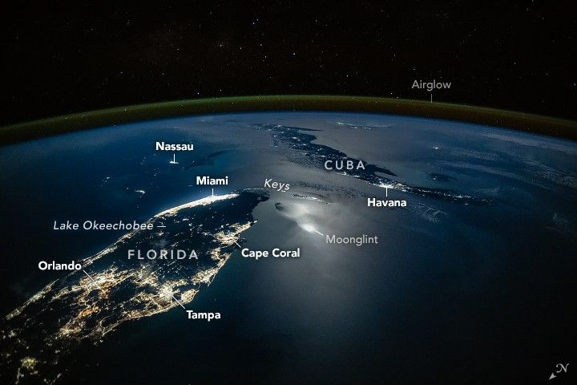

City Lights Glow Along Moonlit Waters
An astronaut aboard the International Space Station captured this oblique nighttime view of Earth’s limb, showing the Florida Peninsula and Cuba illuminated below. The photograph reveals the bright center of the Moon’s reflection point—known as moonglint—the nighttime equivalent of the sunglint phenomenon often seen in astronaut imagery.
Similar to sunglint, moonglint occurs when light from the Moon reflects off the ocean surface at the same angle at which it is observed—here, by a crew member aboard the space station. The image was taken at 2:23 a.m. Eastern Standard Time on March 19, 2025, during mostly cloud-free conditions. Although the Moon itself is not visible, it had risen about three hours earlier and was roughly halfway to its highest point in the sky. At the time, the Moon was in a waning phase, providing about 78 percent of the illumination of a full Moon.
The short focal-length lens used for the photograph offers a field of view similar to that of the human eye. This wide perspective highlights the curvature of Earth and reveals the faint airglow layer tracing the planet’s limb above the horizon. Dense clusters of light across Florida indicate major metropolitan areas. The urban corridor from Miami to Fort Lauderdale forms the brightest stretch along the southeastern Atlantic coast.
On Florida’s west coast, Tampa and Saint Petersburg stand out clearly, while lower-density lighting marks Fort Myers and Cape Coral farther south. The expansive city of Orlando appears near the center of the peninsula. Offshore, Nassau, the capital of the Bahamas, shines as a bright point roughly 320 kilometers (200 miles) east of Miami.
A faint string of lights traces the towns of the Florida Keys, while farther south lies Havana, Cuba’s capital, with smaller cities visible along the length of the island. Near the horizon in the upper right of the image, distant lights mark the island nation of Jamaica. Altogether, this oblique view captures features spanning more than 1,400 kilometers (900 miles) in a single frame.
Some of the darkest regions in the image correspond to undeveloped landscapes, including Lake Okeechobee, Everglades National Park, and nearby wildlife management areas. The surrounding ocean appears nearly black, except for a distinct band of reflected moonlight concentrated over the waters near the Florida Keys and Cuba.